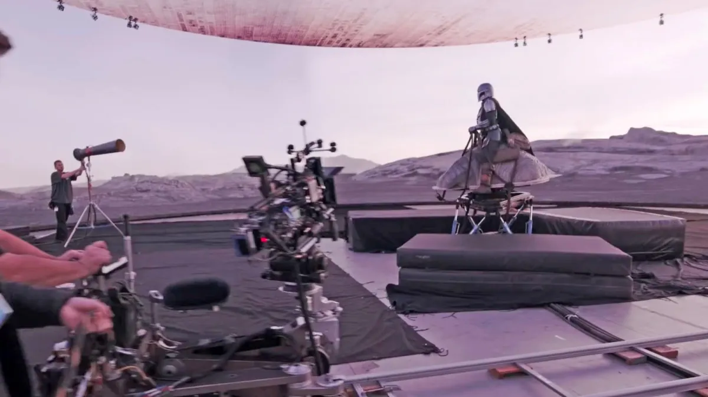
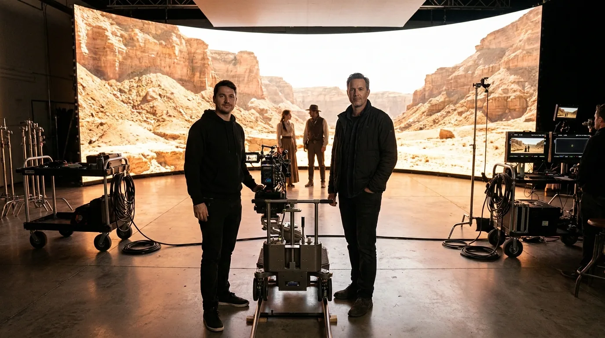

The Mandalorian made the LED volume famous, and ever since, producers have asked us for "that wall." The good news is that the trick is not a secret, and the core kit is the same gear Cineva by Apex Sound & Light stocks. Here is the plain version of how it works.
The whole idea is to put the background on a giant LED screen and shoot it in camera, so the world is really there on the day. The actor sees it, light from it falls on faces and reflects off surfaces, and the shot is finished in the lens instead of three months later in post.
The panel
It starts with the screen. The show was shot inside ILM's StageCraft volume, a wall built from ROE Black Pearl LED panels, the film-grade tile the industry settled on for this work. Cineva holds one of the largest stocks of the Black Pearl BP2 V2 in North America, the same panel line.
What the spec buys is believability. At 2.84mm pitch and 16-bit colour, the wall holds a clean image at high shutter speeds, resolves smooth skies instead of banded ones, and lets the camera move in close before the grid shows. It is built for the lens, not for a live crowd, which is why it reads as a place on camera. More on the Black Pearl panel →
The processor
A great panel still needs something to drive it. The show ran on Brompton Tessera processing, and so do our walls. The processor is what lets the camera set its own exposure and shutter while the wall tunes itself to match, so you get deep HDR and accurate colour with no scan lines or flicker in the gate.
It pushes uncompressed video and deep HDR from the render engine to the panels without adding lag, so skin tones and the light off a wet street read real in the lens, not just bright to the eye.
Content and sync
Then there is what plays on the wall, and how it stays glued to the camera. The environment, whether a live 3D world or a captured plate, is rendered to the wall and locked to the camera through genlock and timecode, so the background tracks the lens instead of sliding against it. Shooting more than one camera at once is its own puzzle, because the perspective is only correct for one of them. Frame remapping sends each camera its own correct view so a coverage day holds together.

Why crew, not kit
Here is the part the demos leave out. You can buy the panel and rent the processor, but the show did not work because of a parts list. It worked because a crew knew how to calibrate the wall to the camera, light the foreground to match the world, and keep the whole thing in sync take after take. The kit is the easy part to buy; the reason it works on camera is the people running it.
That is what Cineva brings: the same panel and processor you have seen on prestige TV, plus the crew who builds it, calibrates it, and stands on the floor when something needs a fix on the day. And when green screen is the smarter call for a shot, we will say so. Green or volume?